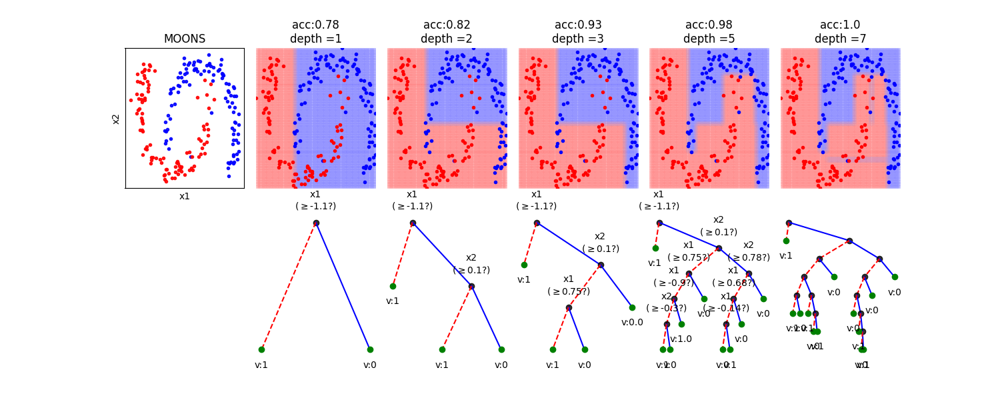
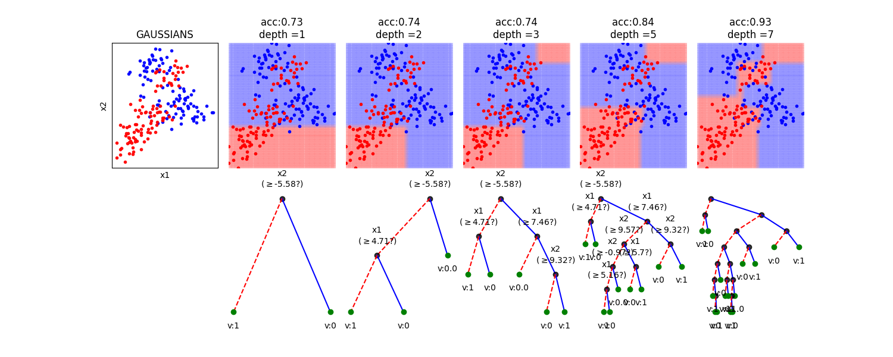
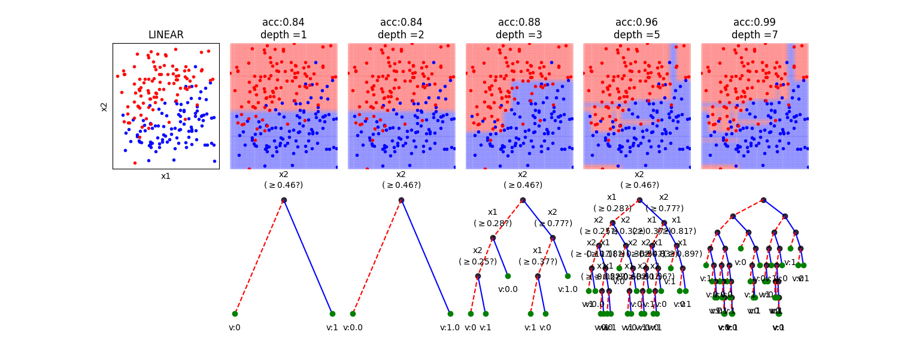
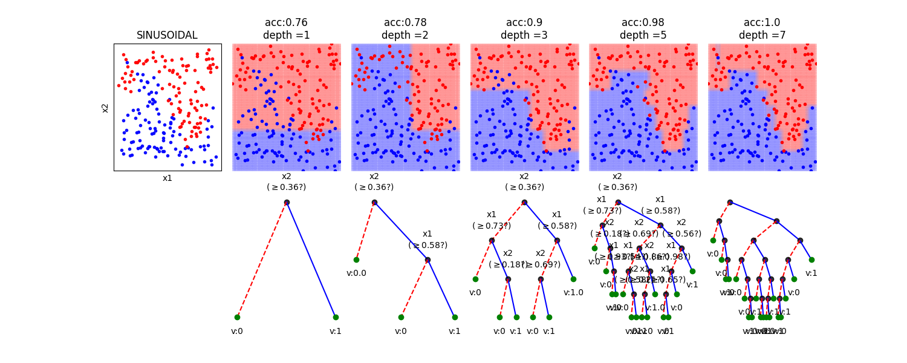
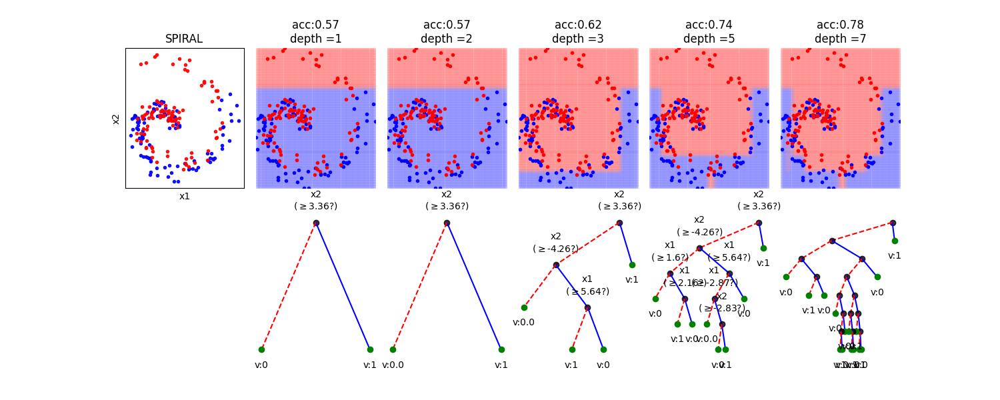

Note
Go to the end to download the full example code or to run this example in your browser via JupyterLite or Binder
Classification Trees: Depth & Decision boundaries¶
Classification Trees: Depth & Decision boundaries
In this notebook, we show, how the depth of a decision tree affect the decision boundries for classification. With toy examples of simulated 2D datasets, plotting the decsison boundries allows us to understand the overfitting of tree. You will be able to observe that by lowering the depth of tree, you can minimize the overfitting. Higher depth of a tree create a much complex decision boundry to classify each example in training correctly, as a consequences, it fails to generalize for test data. The take away message of this notebook is be careful to choose hyperparameter *max_depth* for a tree before training.

- 
- 
- 
- 
- 
spkit version : 0.0.9.7
import numpy as np
import matplotlib.pyplot as plt
import spkit as sp
from spkit.ml import ClassificationTree
print('spkit version :', sp.__version__)
# just to ensure the reproducible results
np.random.seed(100)
def get2DGrid(X,density=100):
mn1,mn2 = np.min(X,axis=0)
mx1,mx2 = np.max(X,axis=0)
x1 = np.linspace(mn1,mx1,density)
x2 = np.linspace(mn2,mx2,density)
x1,x2 = np.meshgrid(x1,x2)
Xt = np.c_[x1.flatten(),x2.flatten()]
return Xt
def plotXy(X,y,ax=None,m='o',alpha=0.2):
clr = ['b','r','g','y','m','k']
cls = np.unique(y)
for i in range(len(cls)):
c = cls[i]
ax.plot(X[y==c,0],X[y==c,1],m+clr[i],alpha=alpha)
dType=['MOONS', 'GAUSSIANS', 'LINEAR', 'SINUSOIDAL', 'SPIRAL']
plt.figure(figsize=(15,10))
for k in range(len(dType)):
dtype = dType[k]
X,y = sp.data.create_dataset(N=200, Dtype=dtype, noise=0.01)
Xt = get2DGrid(X,density=80)
mns = np.min(Xt,axis=0)
mxs = np.max(Xt,axis=0)
depths = [1,2,3,5,7]
N = len(depths)+1
plt.subplot(5,N,k*N+1)
plotXy(X,y,ax=plt,m='.',alpha=0.9)
plt.xticks([])
plt.yticks([])
plt.ylabel(dtype)
for i in range(len(depths)):
d = depths[i]
model = ClassificationTree(max_depth=d)
model.fit(X,y,verbose=0,feature_names=['x1','x2'])
yt = model.predict(Xt)
yp = model.predict(X)
acc = np.around(np.mean(y==yp),2)
plt.subplot(5,N,k*N+i+2)
plotXy(Xt,yt,ax=plt,m='o',alpha=0.02)
plotXy(X,y,ax=plt,m='.',alpha=0.99)
plt.xlim([mns[0],mxs[0]])
plt.ylim([mns[1],mxs[1]])
plt.axis('off')
if k==0: plt.title('depth ='+str(d))
plt.subplots_adjust(left=None, bottom=None, right=None, top=None, wspace=0.05, hspace=0.05)
plt.show()
# Toy Examples with tree with different depth
dType=['MOONS', 'GAUSSIANS', 'LINEAR', 'SINUSOIDAL', 'SPIRAL']
for k in range(len(dType)):
dtype = dType[k]
X,y = sp.data.create_dataset(N=200, Dtype=dtype, noise=0.01)
Xt = get2DGrid(X,density=80)
mns = np.min(Xt,axis=0)
mxs = np.max(Xt,axis=0)
depths = [1,2,3,5,7]
N = len(depths)+1
plt.figure(figsize=(15,6))
plt.subplot(2,N,1)
plotXy(X,y,ax=plt,m='.',alpha=0.9)
#plt.axis('off')
plt.xticks([])
plt.yticks([])
plt.xlabel('x1')
plt.ylabel('x2')
plt.title(dtype)
for i in range(len(depths)):
d = depths[i]
model = ClassificationTree(max_depth=d)
model.fit(X,y,verbose=0,feature_names=['x1','x2'])
yt = model.predict(Xt)
yp = model.predict(X)
acc = np.around(np.mean(y==yp),2)
plt.subplot(2,N,i+2)
plotXy(Xt,yt,ax=plt,m='o',alpha=0.03)
plotXy(X,y,ax=plt,m='.',alpha=0.99)
plt.xlim([mns[0],mxs[0]])
plt.ylim([mns[1],mxs[1]])
plt.axis('off')
plt.title('acc:'+str(acc)+'\ndepth ='+str(d))
plt.subplot(2,N,N+i+2)
if d>5:
model.plotTree(show=False,showtitle=False,legend=False,showNodevalues=False, showThreshold=False)
else:
model.plotTree(show=False,showtitle=False,legend=False)
plt.subplots_adjust(left=None, bottom=None, right=None, top=None, wspace=0.1, hspace=None)
plt.show()
Total running time of the script: (0 minutes 4.101 seconds)
Related examples

Decision Trees with shrinking capability - Regression example

Decision Trees without converting Catogorical Features

Decision Trees with shrinking capability - Classification example
Auditory Attention: Plot Group Data
Sample and Approximate Entropy: Comparison